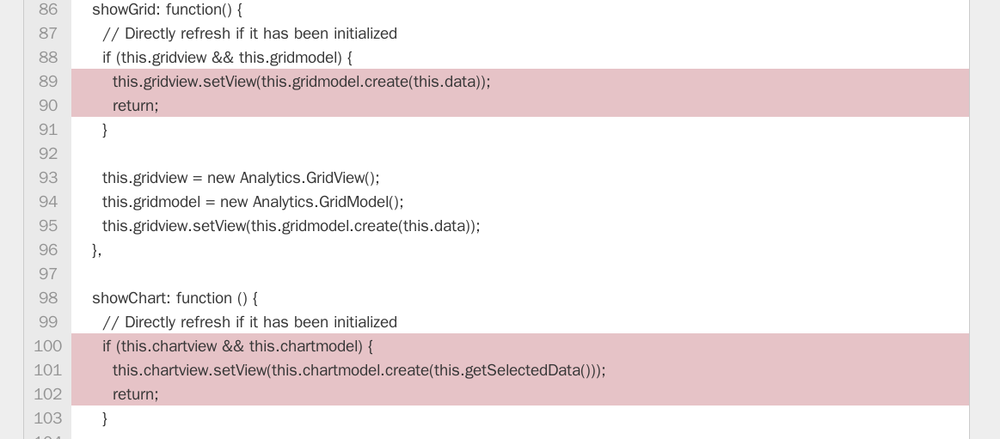
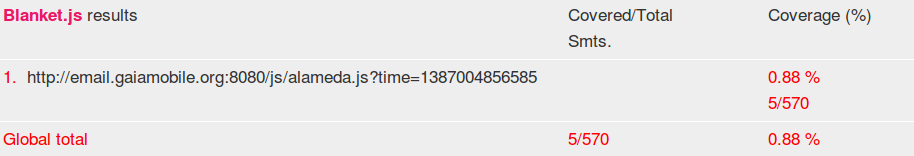

Created by Ricky Chien
For better software quality, we always write tests to ensure our program can execute correctly
A JavaScript unit tests example
Coverage tool can give us a statistic report after testing
Blanket.js - JavaScript test coverage tool
Even show source code coverage details
Nowadays, web is going to become more complicated
Client (Browser) can take more job than server
Just like a desktop application but written by web technique
Developers want to distribute JavaScript files to modules
Web page is composed by modules or third-party libraries
Web application is different with desktop application here
Web application load resources in background, but desktop application doesn't
Too many scripts download will cause network slow down
User always not use every functionality on website
Some libraries are so huge that will stuck webpage on loading
Some libraries are unnecessary when first time load
Preloading
Load on demand
Load with async or defer
Firefox OS email app has 27 sources, but only covered one file
We demonstrate prevalent way of dynamic loading on web
Lazyload-sample websiteThese coverage tool setup instrumentation scripts on beginning
Load script dynamically through javascript is so hard to detect
var xhr = new XMLHttpRequest();
xhr.onload = function (responseScript) {
// Execute response script
eval(responseScript);
};
xhr.open('GET', 'URL');
xhr.send();
Ajax is a dynamic way to load scripts
Demonstrate the web script loading approachs
<script src="path/script.js"></script>
or
<script>
// Script content
</script>
Support
<script src="path/script.js" async></script>
or
<script src="path/script.js" defer></script>
Support
var xhr = new XMLHttpRequest();
xhr.onload = function (responseScript) {
// Execute response script
eval(responseScript);
};
xhr.open('GET', 'URL');
xhr.send();
Need to support
document.write('');
Bad performance. Won't support
appendChild / insertBefore / replaceChild
var script = document.createElement("script");
script.src = url;
document.head.appendChild(script);
parentNode.insertBefore(script, node);
parentNode.replaceChild(script, oldNode);
Need to support
Famous module loader library such as RequireJS using syntax :
require(["path/script.js"], function() {
// This function is called after path/script.js has loaded.
});
Need to support
Mechanism behind dynamic loading is native DOM modification API or XHR API
Most of dynamic loading approachs are through DOM modification API and XHR.
We can hack these native DOM modification API and XHR.
A lot of tests are needed to ensure it doesn't break.
Overwrite original appendChild / insertBefore / replaceChild
Element.prototype.appendChild = function(newElement) {
// Do our hack here
return originalAppendChild.apply(this, args); // invoke original method
};
Element.prototype.insertBefore = function(newElement, referenceElement) {
// Do our hack here
return originalInsertBefore.apply(this, args); // invoke original method
};
Element.prototype.replaceChild = function(newElement, oldElement) {
// Do our hack here
return originalReplaceChild.apply(this, args); // invoke original method
};
Overwrite original open method in XHR object
XMLHttpRequest.prototype.open = function(method, url) {
// Do our hack here
return originalXHROpen.apply(this, args); // invoke original method
};
A simple website for demo dynamic loading mechanism
When test coverage meet with dynamic loading will cause zero coverage.
Survey prevalent method of dynamic loading on web.
Propose a solution to hack DOM API for addressing zero coverage.
New mechanism succeed. Dynamic loading scripts have been covered.
Need more testimonies to proof other coverage tools do not have such feature.